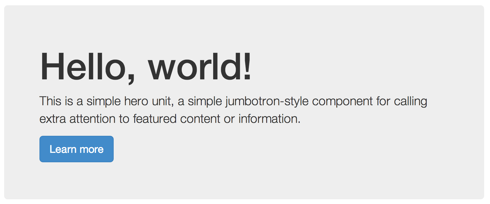

Slides : http://permalink.com
Bootstrap has 4 different types of navigation
Default Navbars are responsive meta components that serve as navigation headers for your application or site. They begin collapsed (and are toggleable) in mobile views and become horizontal as the available viewport width increases.
Add .navbar-fixed-top and include a .container or .container-fluid to center and pad navbar content.
Body Padding Required:
body { padding-top: 70px; }
Add .navbar-fixed-bottom and include a .container or .container-fluid to center and pad navbar content.
Body Padding Required:
body { padding-bottom: 70px; }
Full-width navbar that scrolls away with the page.
A lightweight, flexible component that can optionally extend the entire viewport to showcase key content on your site.

Hello, world!
This is a simple hero unit, a simple jumbotron-style component for calling extra attention to featured content or information.
It uses utility classes for typography and spacing to space content out within the larger container.
Bootstrap makes styling forms easy and fast.
Use .form-group to organize your forms
Can be used on block elements like fieldset or div
Use to style...
Use to style radios and checkboxes, of course.
Add a .btn class along with a style class to your button.
Bootstrap has six styles and variations.
Use .btn-lg or .btn-sm for larger or smaller buttons, respectively.
Use .btn-block for block-level buttons.
Use disabled attribute to disable your buttons.
Modals are prettier versions of dialog prompts!
Alerts provide contextual feedback messages for typical user actions. Bootstrap has four styles.
Add a contact form to your website so that your visitors may reach you.
Inputs to consider:
Use this flexible and extensible content container to display images.
They replaced Bootstrap 3's old panels, wells, and thumbnails.
Wrap them as a deck to have them as separate yet similarly-sized.
Copy content from earlier...
Create a gallery or portfolio of your work (or anything else that interests you).
Utilize a three-column grid layout and cards to organize your content.
Before you start creating custom CSS for your design, check the Bootstrap documentation to see if they've already created a class that does what you want.
Always be reusing, check if other developers have created a Bootstrap plugin you can leverage
Want to customize your Bootstrap page even more?
Just create your own CSS and include it in the head, below the Bootstrap CSS to add and override styles!
A font and CSS toolkit originally designed for Bootstrap.
Easily styled with just CSS and fully accessible.
Just add one line in your head to start using it.
Sass is is the most mature, stable, and powerful professional grade CSS extension language in the world.
CSS with superpowers! Reuse variables, mixins, etc
Bootstrap uses Sass style sheets to define base colors, types
Get Bootstrap: All documentation and download files for Bootstrap
Bootstrap Expo: Check out all the rad site designs that use Bootstrap
Bootstrap on GitHub: Check out the Bootstrap repo. Maybe even contribute to the project!